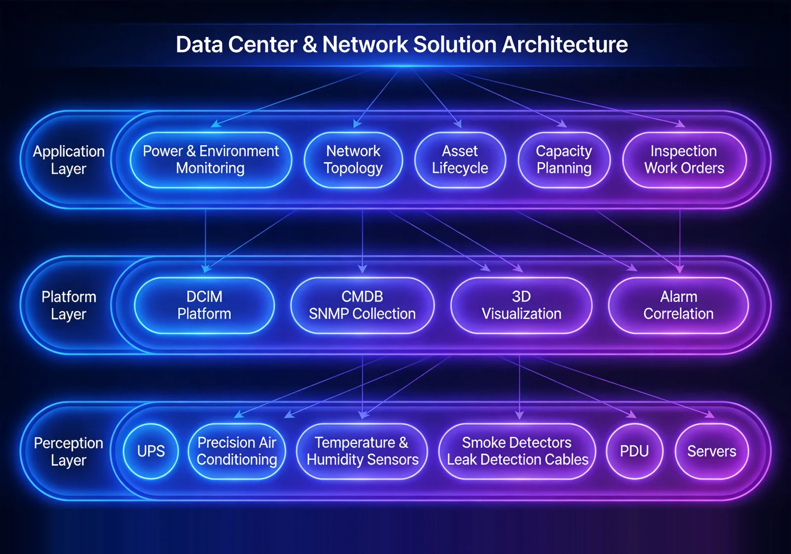

For local African enterprises and Chinese institutions, end-to-end data center infrastructure and network architecture design services that address the core pain points of low data center construction standards, outdated network architecture and scattered operations management, building a highly available, highly secure and scalable IT foundation.
Solution Overview
Provides local African enterprises and Chinese institutions with end-to-end data center infrastructure and network architecture design services, addressing low construction standards, outdated network architecture and scattered operations management, and building a highly available, highly secure and scalable IT environment.
Applicable to: Enterprise data centers, office networks, campus networks, branch interconnection.
- Modular design with elastic scaling
- Redundant architecture for high availability
- Unified operations platform reducing complexity
- Compliant with TIA-942 and ISO27001 standards
Benefits: Higher IT infrastructure availability, lower operations labor costs, and stronger business continuity assurance.
Business Challenges
Among enterprises and institutions operating in Africa, customers often face low construction standards, outdated network architecture and weak security defenses, and urgently need an international-standard, highly available IT environment with unified operations.
Low construction standards
Unstable power, poor temperature and humidity control and insufficient fire measures put servers at constant outage risk.
Outdated network architecture
Poorly designed core-aggregation-access layers create bandwidth bottlenecks and block expansion.
Weak security defenses
Missing firewalls and intrusion detection leave data exposed to leakage risk.
Slow fault diagnosis hurts business
Systems managed in silos locate faults slowly without a unified view; business continuity risk grows with scale.
International standards compliance
Data center and security systems should follow TIA-942 and ISO27001.
Unified operations visibility
One operations platform should track room environment, network traffic and server status in real time.
Typical Scenarios:
Target Roles: IT directors, network engineers, operations engineers, security administrators.
Solution Architecture
Built on a four-layer “infrastructure-network-security-operations” architecture covering room power and environment, three-tier networking, defense in depth and unified operations, supporting integrated deployment of servers, storage, virtualization and disaster recovery.

The infrastructure layer secures power, cooling and the physical environment; the network layer carries business traffic on a three-tier design; the security layer builds defense in depth; the operations layer monitors room environment, traffic and servers in one place.
Core Modules
Room infrastructure
UPS, precision cooling, generators and rack PDUs form a highly available power environment.
Three-tier network
Core-aggregation-access layered design with SDN for automated orchestration.
Defense in depth
Firewalls, intrusion detection, vulnerability scanning and bastion hosts at every layer.
Unified operations monitoring
A visualized dashboard showing environment, traffic and server status in real time.
Integrated deployment
Server clusters, storage arrays, virtualization and disaster recovery planned as one.
Integration Capabilities:
- Integrated deployment of server clusters, storage arrays, virtualization and disaster recovery
- Network performance monitoring with automatic alerting
- Full life-cycle IT asset tracking
Advantages & Delivery
With modular, redundant design benchmarked against international standards, we deliver complete services that raise IT availability and security, implemented through data center siting and design, structured cabling, security hardening and operations platform deployment.
Differentiated Advantages
International Standards
Designed and accepted per TIA-942 and ISO 27001, keeping compliance risk low.
Modular Elastic Expansion
Expand in phases as the business grows, protecting existing investment and avoiding over-building.
Redundant High Availability
Redundant power, cooling and network links: a single point of failure does not affect business.
Unified O&M Platform
One dashboard for environment, traffic and server status across systems, reducing management complexity.
Defense-in-Depth Security
Firewalls, IDS and bastion hosts form a layered defense system.
Integrated Deployment
Server clusters, storage arrays, virtualization and DR are planned and deployed together, reducing integration risk.
Implementation Process
Requirement Research
Sort out business scale, availability targets and compliance requirements.
Site Selection & Design
Complete layout and power-environment design per TIA-942.
Structured Cabling
Complete structured cabling and tray construction.
Equipment Installation
Install racks, UPS, air conditioning, network and security devices.
Network Configuration
Configure the three-tier architecture and commission SDN orchestration.
Security Hardening
Deploy firewall policies, IDS and bastion hosts.
O&M Platform & Training
Launch the O&M dashboard and train staff before handover.
Service Guarantee
Client Value
Higher IT availability, lower O&M labor cost and stronger business continuity lay a solid foundation for digital transformation.